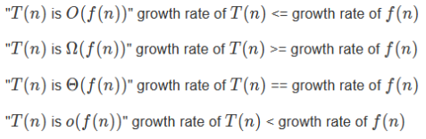
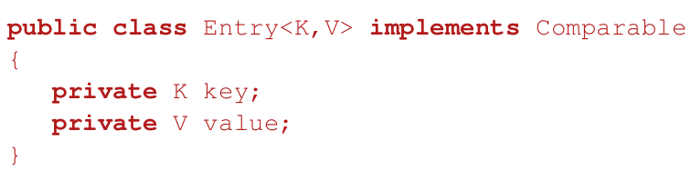
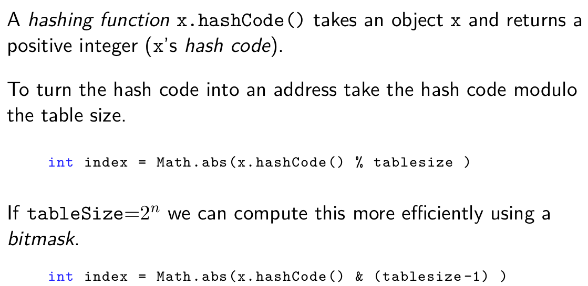
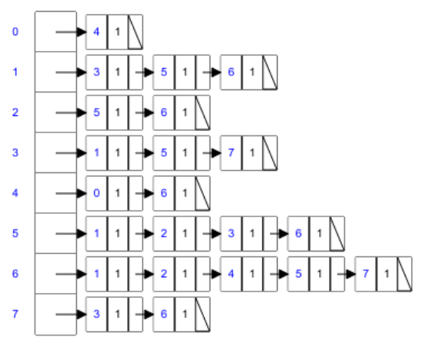

Algorithmics
Good luck today!🍀
Matthew Barnes & Stanley
Modrák (last revised 2021)
Contents
Know how long a program takes 6
Travelling Salesperson Problem 6
Sorting 6
Running time 6
Time complexity 7
Functions comparison 8
Big-O (O) 8
Big-Omega (Ω) 9
Big-Theta (ϴ) 9
Disadvantages of Big-Theta
Notation 10
Declare your intentions (not your
actions) 10
ADTs 10
Stacks 10
Queues 11
Priority queues 12
Lists 12
Sets 12
Maps 13
Linked lists 13
Point to where you are going:
links 13
Contiguous data structures 13
Arrays 13
Variable-length Arrays 14
Non-contiguous data structures 14
Linked lists 14
Singly Linked 14
Doubly Linked 15
Skip Lists 15
Recurse! 15
What is recursion
(Divide-and-Conquer)? 16
Induction 16
Factorial 16
Analysis 16
Integer power 17
Analysis 17
GCD 18
Fibonacci sequence 18
Towers of Hanoi 19
Analysis 19
Cost 20
Make friends with trees 21
Trees 21
Levels 21
Binary trees 21
Implementation 21
Binary Search Trees 22
Comparable interface 23
Search 23
Sets 23
Tree iterators 23
Keep trees balanced 24
Tree depth 24
Complete trees 24
Rotations 24
AVL trees 27
Performance 29
Red-black trees 29
Performance 30
TreeSet 30
TreeMap 30
Sometimes it pays not to be
binary 31
Multiway trees 31
B-Trees 31
B+ Trees 32
Tries (Prefix Trees) 33
Suffix trees 33
References 34
Use heaps! 34
Heaps 34
Addition 35
Removal 35
Array implementation 36
Implementation 37
Time complexity 38
Priority queues 39
Heap Sort 39
Standard Heap Sort 40
Other heaps 40
Make a hash of it 41
Hash functions 41
Collision resolution 41
Separate chaining 42
Open addressing/hashing 42
Linear probing 42
Quadratic probing 43
Double hashing 43
Removing items 43
Lazy remove 44
The Union-Find Problem 45
Example: dynamic connectivity 45
Equivalence classes, relations 45
Union-Find 46
Quick-Find 46
Implementation 47
Quick-Union 48
Implementation 49
Improvements 50
1. Weighted Quick-Union 50
2. Path compression 51
Use them together 51
Analyse! 52
Algorithm Analysis 53
Search 53
Sequential search 53
Binary search 54
Simple Sort 56
Bubble Sort 56
Insertion Sort 58
Selection Sort 59
Lower Bound 59
Sort wisely 59
In-place and Stable 60
In-place 60
Stable 60
Merge sort 60
Merge Sort with Insertion Sort 64
Quick sort 64
Quicksort with Insertion Sort 66
Shuffling 66
Knuth/Fisher-Yates Shuffle 66
Partitioning 66
Lomuto scheme 67
Hoare scheme 67
Multi-pivoting 67
Dual-pivoting 68
3-pivot 68
Radix Sort 68
Radix Sort with Counting Sort 72
Counting Sort 72
Think graphically 73
Graph Theory 73
Graphs 73
Connected graphs 73
Paths, walks and cycles 74
Trees 74
Planar graphs 74
Simple graphs 74
Terminology & theorems 75
Vertex degree 76
Trees 76
Applications of Graph Theory 76
Implementations 76
Adjacency matrix 77
Adjacency list 77
Graph traversal 77
Breadth First Search (BFS) 78
Depth First Search (DFS) 79
Walk enumeration 79
Number of △s in an undirected
graph 80
Degree matrix 80
Laplacian matrix 80
Famous Graph Theory problems 81
Shortest path problems 81
Minimum spanning tree problems 81
Graph partitioning 81
Graph isomorphism 81
Vertex cover 81
Graph colouring 81
Eulerian graphs 82
Determination 82
Fleury’s algorithm 82
The Seven Bridges of Königsberg
problem 83
Hamiltonian graphs 83
Learn to traverse graphs 83
Depth First Search 83
Breadth First Search 84
Graph (greedy) algorithms 85
Minimum Spanning Tree 86
Prim’s Algorithm 86
Kruskal’s Algorithm 90
Shortest Path 92
Dijkstra’s Algorithm 92
Bellman-Ford Algorithm 95
Shortest Path on DAGs 95
Dynamic programming 95
Dynamic Programming 95
Principle of Optimality 97
Applications 97
Dijkstra’s Algorithm 97
Proof that shortest path problems have
principle of optimality 97
Edit Distance 98
Limitation 99
Know how to search 99
Search Trees 99
Backtracking 100
Branch and Bound 101
Search in AI 103
Settle for good solutions 103
Heuristic Search 103
Constructive algorithms 104
Neighbourhood search 104
Simulated Annealing 104
Evolutionary Algorithms 107
Single-point crossover 108
Multi-point crossover 109
Uniform crossover 109
Bit simulated crossover 109
Galinier and Hao’s crossover
operator 110
Tabu search 112
Use linear programming 113
What is linear programming 113
The three conditions 113
Example 113
Maximise function 113
Constraint 1 113
Constraint 2 113
Constraint 3 113
Solve the problem 113
Direction that minimises the cost and the
constraints 115
Normal form 115
Solving linear programs 116
Simplex Method 116
Basic Feasible Solutions (not needed for
exam, but interesting) 116
Know how long a program takes
Travelling Salesperson Problem
- The travelling salesperson problem goes like this:
- You have a map with cities dotted around on it, and each city is
linked.
- Find the shortest path which goes through each city once and returns
to the start (ergo tour)
- There are many algorithms to solve this problem, but how do we
compare them?
Sorting
- In a program, how would you sort a list of numbers?
- There are many algorithms, like Quicksort, Insertion Sort, Shell
Sort etc.
- They all have different performances, and they all perform
differently based on data size inputs.
- How do we compare them?
Running time
- we would like to estimate the running time of algorithms
- this depends on the hardware (how fast the computer is)
- but we want to abstract away differences in hardware !
- count the number of elementary operations (e.g. addition, subtraction, comparison,...)
- each elementary operation takes a fixed amount of time to
execute
- thus counting elementary operations gives a good measure of the time
taken by the algorithm, up to a constant factor
- take the running time of
an algorithm on a given input to be the number of elementary operations (”steps”)
executed
Time complexity
- you can compare algorithms by comparing their run times with
different data input sizes
- in general, the running time depends not
only on the input size but also on the input itself
- the ‘worst-case’ scenario is the worst an algorithm
could possibly perform given an input
- For example, let’s say you had an integer array of size
‘n’. Incrementing each value in that array by 1 would have a time complexity of
‘n’ (assuming a GPU isn’t used), because you have to iterate through the array
‘n’ times to increment each value.
- there are many different kinds of time complexity, some of which
are:
|
Syntax
|
Description
|
|
1
|
Constant
|
|
log(n)
|
Logarithmic
|
|
n
|
Linear
|
|
n log(n)
|
Quasilinear/ Log-linear
|
|
n2
|
Quadratic
|
|
nk
|
Polynomial
|
|
kn
|
Exponential
|
|
n!
|
Factorial
|
- random access: random access is the ability
to access an arbitrary element of a sequence in equal time or any datum from a population of addressable
elements roughly as easily and efficiently as any other, no matter how many elements may be in the
set
Functions comparison

Big-O (O)
- Big O notation denotes the “upper bound” of the time
complexity of an algorithm.
- More specifically, Big O is a set of functions where the growth of
the function is greater than or equal to the growth of the algorithm.
- For example, the worst-case time complexity of Quicksort is O(n2).
- This means that, given really bad inputs, Quicksort can, at worst, perform at a
growth rate of n2.
- When expressing the worst-case time complexity of an algorithm using
big O notation, you write the function with the lowest rate of growth that is greater than/equal to the
algorithm, like this:

- For example, O(n2) includes n log n, n,
log n and any other function with a lower rate of growth than n2.
- Mathematically speaking,
 if
there exists a constant ‘c’ such that where c > 0 and n approaches infinity.
if
there exists a constant ‘c’ such that where c > 0 and n approaches infinity.
Big-Omega (Ω)
- Big Omega notation denotes the “lower bound” of the time
complexity of an algorithm
- when we say that the running
time (no modifier) of an algorithm is Ω(g(n)), we mean that no matter what particular input of size n is chosen for each value of n, the running time on that input is at least a constant times g(n), for sufficiently large
n
- equivalently, we are giving a lower bound on the best-case running time of an algorithm
- e.g. the best-case running time of insertion sort is Ω(n),
which implies that the running time of insertion sort is Ω(n)
- Just like big O notation, big Omega is a set of functions where the
growth of the function is less than or equal to the growth of the algorithm.
- For example, the rate of growth of ‘1’ is less than the
rate of growth of Quicksort. Therefore, ‘1’ is within the best-case time complexity of
Quicksort.
- Then again, ‘log n’ and ‘n’ also have growth
rates less than Quicksort.
- When expressing the best-case time complexity of an algorithm using
big Omega notation, you write the function with the highest rate of growth that is less than/equal to
the algorithm, like this:
- For example, (n2) includes n2, 2n, n! and any other function with a higher rate of growth than n2.
- Mathematically speaking, if
there exists a constant ‘c’ such that where c > 0 and n approaches infinity.
Big-Theta (ϴ)
- Big Theta notation denotes the intersection between big O and big
Omega.
- For example, like the previous examples, the worst-case and
best-case time complexities of Quicksort have “n log n”, so the average-case time complexity
of Quicksort would be:
- Mathematically speaking,
 if
and .
if
and .
Disadvantages of Big-Theta Notation
- cannot compare algorithms whose time complexities have the same rate
of growth
- for small inputs Big-Theta can be misleading:
- algorithm A takes takes n3 +
2n2 + 5 operations
- algorithm B takes 20n2 +
100 operations
- algo A is Θ(n3) and algo B is
Θ(n2)
- but A is faster than B for n < 18
Declare your intentions (not your actions)
ADTs
- ADT = “Abstract Data Type”
- An ADT is an interface of a data structure.
- It only defines your intentions, not the implementation behind
it.
Stacks
- a stack is a last-in-first-out (LIFO) memory model
- operations have Θ(1) complexity
- the standard interface of a stack is:
- push(item)
- T peek()
- T pop()
- boolean isEmpty()
- you can implement a stack using an array or a linked list
- array implementation example (top attribute indexes most recently added element (initially
0)):
- reversing an array
- parsing expression for compilers
- balancing parentheses
- matching XML tags
- evaluating arithmetic expression
- A good way to think of stacks is through the puzzle “Towers of
Hanoi”:
Queues
- a queue is a first-in-first-out (FIFO) memory model
- Its interface looks like this:
- enqueue(element)
- T peek()
- T dequeue()
- boolean isEmpty()
- print queues
- job queues
- event queues
- Communications/Message passing

Priority queues
- a priority queue is like a normal queue, except
each element has a ‘priority’
- the priority of an element determines if it will be the next element
that is ‘popped’ from the queue
- the most efficient implementation using a heap
- its interface looks like this:
- insert(element,priority)
- T findMin()(Min:highest priority)
- T deleteMin() (Min:highest priority)
- the uses of priority queues are as follows:
- queues with priorities (e.g. which threads should run)
- real time simulation
- often used in “greedy algorithms”
- Huffman encoding
- Prim’s minimum spanning tree algorithm
Lists
- a list is a data structure where the order in which you insert
elements matter
- repetitions are allowed
- Its interface is as follows:
- add(element)
- remove(index)
- set(index, element)
- T get(index)
- you can implement a list using arrays or linked lists
- Java provides ArrayList<T> and
LinkedList<T> (implement List<T> interface)
Sets
- a set is a data structure with no
repetition and no order
- models mathematical sets
- its interface is as follows:
- add(element)
- contains(element)
- size()
- remove(element)
- isEmpty()
- you can search for elements quickly in a set, and you can get the
‘union’ and ‘intersection’ of sets
- you can implement a set using a hash table (fast) or a binary
tree
- Java provides HashSet<T> (fast) and TreeSet<T>
(implements Set<T> interface)
Maps
- a map is a data structure that allows key-value pairings (key-data)
- you can access data quickly, as long as you know the key
- no repetitions of keys (unique)
- you can implement this using a tree or a hash table
- a ‘multimap’ allows multiple values to be linked to the
same key
Linked lists
- a linked list is a data structure where one element points to the
next
- it’s easier to think of this as a chain, with each link
connecting the next
Point to where you are going: links
Contiguous data structures
- Contiguous-allocated structures, are made of single slabs of
memory
- some of these data structures are arrays,
matrices, heaps, and
hash tables
Arrays
- Efficient use of memory
- Usually best performance
- the only way to enlarge is double the size of the array
(variable-length array!)
- inefficient and not exact?
- Insert / delete from middle has time Θ(n)
(on average)
Variable-length Arrays
- most add(elem) operations are
Θ(1)
- adding to full array is slow but amortised by subsequent quick adds
(i.e. on average)
- when we are at full capacity we have to copy all elements
Non-contiguous data structures
- Non-contiguous (or Linked) data structures, are composed as distinct chunks of
memory linked together by pointers (references)
- some of this data structures are lists,
trees, and graph adjacency lists
- Uses data units that points to other data units
- E.g.
- Binary Tree
- Graphs
- Linked Lists
Linked lists
- consists of element, and next object
- built from Nodes
- easier to resize, and add nodes onto
- not so useful on their own (used in skip lists & hash
tables)
- For efficient insert and delete
- Line editors
- Store each line as a separate string
- Easy to insert and delete new lines
- lists – variable length arrays are usually better
- queues – linked list OK, but circular arrays are probably
better
- sorted lists – binary trees much better
Singly Linked
- head is just a place in memory, that points to
starting element (a copy of reference to the 1st node)
- tail can point to the back of
queue
- for use with stacks
- Remove by linking past it
- Add into anywhere, by changing nexts
- get_head()
- get()
- remove()
Doubly Linked
- Used to make the implementation slicker
- Times
- Add/ remove O(1)
- Find O(n)
Skip Lists
- hierarchies of linked lists to support binary search
- less elements at higher level
- provide Θ(log (n)) search compared with Θ(n) for
LinkedList
- also efficient concurrent access
Recurse!
What is recursion (Divide-and-Conquer)?
- functions/methods to be defined in terms of themselves
- recursion is a strategy whereby we
reduce solving a problem to solving 1 or more ‘smaller’ problems
- we repeat until we reach a trivial case which we solve
otherwise
- must check for base case before every new invocation
- ensure the problem gets ‘smaller’
- recursive solutions have two parts:
- the base case: the smallest
version of the problem or boundary case, where solution is trivial
- the recursive clause: a
self-referential part driving the problem towards the base case
- may not be the most efficient solutions (sometimes simple for-loop
is better)
Induction
- proof by mathematical induction uses recursion
- the base case is the initial proposition, e.g. P(1)
- the recursive clause is P(n + 1) given that P(n) is true
Factorial
- recursively (not the most efficient) Θ(n)

- non-recursively, still Θ(n)
Analysis
- T(n) time to solve a problem of size n
- complexity of factorial(long n) by counting multiplications:
T(n) = T(n-1) + 1 for n > 0, T(0) = 0
then
T(n) = T(n-1) + 1 = T(n-2) + 2 = … = T(0) + n = n = Θ(n)
Integer power
- you can use recursion to calculate integer powers
- for example, to solve 5100, you could multiply 5 by itself 100 times.
- the time complexity of this would be O(n), because it performs n calculations
- a more efficient way of doing this would be:
- the time complexity of this is O(log n) and can also be implemented using recursion
Analysis
GCD
- greatest common divisor
- the GCD of A and B is the largest integer C which
exactly divides both A and B
- Euclid’s algorithm uses the following:
do gcd(A,B) = gcd(B,A mod B)
until gcd(A,0) = A
gcd(70,25) = gcd(25,20) = gcd(20,5) = gcd(5,0) = 5
Fibonacci sequence
- do not use recursion! (exponential)
Towers of Hanoi
- the Towers of Hanoi is a classic type of puzzle using stacks
- the goal is to move a whole stack from the left-most tower to the
right-most tower
- you cannot move a bigger disc onto a smaller disc

- one can solve Towers of Hanoi using recursion:
- O(2n)
|
hanoi(n, A, B, C) {
if (n>0) {
hanoi(n-1, A, C, B);
move(A, C);
hanoi(n-1, B, A, C);
}
}
|
|
|
Analysis
- recursion is a powerful tool for writing algorithms
- it often provides simple algorithms to otherwise complex problems
- there are times when you should avoid recursion
(computing
Fibonacci numbers)
- you need to be able to analyse the time complexity of recursion as
opposed to iteration (using loops)
Cost
- recursion comes at a cost (extra function
calls)
- the cost of additional function calls is often insignificant
- with function call the current values of all local
variables in scope are put on a stack
- when the function returns the values stored on the stack are popped
and local variables restore to their original state
- although well optimised these operations are time consuming
Make friends with trees
Trees
- a tree is an acyclic undirected graph (maths def)
- graph: a structure consisting of nodes or vertices joined by
edges
- undirected: the edges have no “direction”
- acyclic: there are no cycles
- a tree in computer science goes from the top down
- rooted tree: with ordering, has root node,
nodes have children, nodes without children are leaves
- used in many data structures: Binary trees, B-trees, heaps, tries,
suffix trees
- each tree can be split into further subtrees plus the root (itself a
tree)
Levels
- level (depth) of a node is its distance from the root
- tree height is the number of levels
Binary trees
- a tree whose nodes can only have up to two
children
- total # of possible nodes at level l is 2l
- total # of possible nodes of a tree of height h is 1 + 2 + … + 2h-1 = 2h - 1
Implementation
Binary Search Trees
- a binary search tree (BST) is a binary tree that stores comparable elements
- elements are ordered
- the left child’s element must be smaller than
the parent, and the right child’s element must be
bigger than the parent
- the subtrees are Binary Search trees themselves
- it is easy to search an element in these; just start from the node,
and compare elements on the nodes as you go down
- the worst case is Θ(the
height of the tree)
- interface: contains(T e), add(T e), successor(),
remove(T e)
Comparable interface
- to make objects comparable they must implement Comparable<T> interface
Search
Sets
- you can use binary search trees to implement a set
- the rapid search of the binary search tree complements the
implementation of a set
Tree iterators
- iterators can iterate through a tree by going through the tree in a
prefix, infix or postfix manner
- the image is an example of infix:
Keep trees balanced
- motivation to balance: the number of
comparisons to access (search) and element depends on the depth of the node
Tree depth
- in the best case (a full tree), if the # of elements in a tree with
h levels is n = 2h - 1 then max depth of a node is
h = log2(n+1), which is Θ(log n)
- in the worst case (effectively a linked list), the max depth is n which is Θ(n)
- the worst case happens when elements are added in order
- for random sequences the average depth is of a node is O(log n)
Complete trees
- a complete (or full) tree is a tree where every level, except the last, is full of nodes
- this is far better and more efficient than sparse trees, where nodes are all collected on one branch
- we need ways of ensuring that our binary trees are complete, there
are different types of trees that ensure this
Rotations
- to balance a tree, we can rotate it
- we can rotate a tree left or right around a pivot node
- strategies for balancing trees: AVL, Red-black, Splay trees
- single rotations work when the unbalanced tree
(difference in height of 2 subtrees of at least 2) is on the outside
- double rotations fix imbalance on the inside
- types: left, right, left-right double, right-left double
|
Step 1 - Start
|
Step 2 - Make A’s right child equal to C’s left
child
|
Step 3 - Make C’s left child equal to A
|
Step 4 - Finish
|
|

|

|

|

|
|
Step 1 - Start
|
Step 2 - Make A’s left child equal to B’s right
child
|
Step 3 - Make B’s right child equal to A
|
Step 4 - Finish
|
|

|

|

|

|

AVL trees
- an AVL tree is a binary search tree such
that:
- the heights of the left and right subtree differ by at most 1
- the left and right subtrees are AVL trees
- the height of an AVL tree against the number of nodes (n) in the tree has a worst-case logarithmic relationship of O(log n)
- m(h) be the minimum number of nodes in an AVL
tree of height h
- m(h) = m(h - 1) + m(h - 2) + 1 ⇔ m(h) = fibonacci(h +
2) - 1
- n ≥ m(h) ≥
(3/2)h-1
- h = O(log n)
- when balancing the AVL trees, each node has a balance
factor
- the balance factor is 0 if the left child tree and right child tree
have the same heights
- the balance factor is +n if the left child tree’s height is n
levels smaller than the right child tree’s height (e.g. +1 means right tree’s height is left
tree’s height + 1)
- the balance factor is -n if the right child tree’s height is n
levels smaller than the left child tree’s height (e.g. -2 means right tree’s height is left
tree’s height - 2)
- balance factors should always be -1, 0 or
1, if they are not -1, 0 or 1, the tree is balanced by rotation
- when inserting/deleting elements into an AVL tree, balance factors should be checked and appropriate rotations
should be made to keep the balance
- insertions are ?
- deletions are worst case Θ(log n)
- AVL tree animation (signs reversed):

Performance
- height of an AVL tree is Θ(log n)
- searching is at worst Θ(log n)
- insertion without balancing is Θ(log n), balancing takes an
additional Θ(log n) steps in the worst case
- deletion without balancing is Θ(log n) at worst (need to find
the node first), balancing takes an additional Θ(log n) steps in the worst case
- average height ≅ 1.44log2 n
- average binary search tree height ≅ 2.1log2 n
- insertion is slightly slower in AVL than in BST, search
quicker
Red-black trees
- a red-black tree is a
type of self-balancing binary search tree
- 2 rules ensure that no path from the root to a leaf, or to a node
with one child, is more than twice long as another
- it follows the normal rules of a binary search tree, including the
following:
- each node is either red or
black
- RED rule: the
children of a red node must be black
- BLACK rule: the number of black nodes
must be the same in all paths from the root to nodes with no children or with one child
- the root is black (this rule is
sometimes omitted, since the root can always be changed
from red to black, but not necessarily vice versa), this rule has little effect on analysis
- all leaves (NIL) are black
- if a node is red, then both its children are black
- every path from a given node to any of its descendant NIL nodes
contains the same number of black nodes
- the number of black nodes from the root to a node is the node's
black depth
- the uniform number of black nodes in all paths from root to the
leaves is called the black-height of the red–black tree
- when inserting elements into a red-black tree, the element put in is
always marked as red
- the rules of a red-black tree can be broken, there are four cases (recursive):
- the inserted element is the root; in
which case, the inserted element is set to black
- the inserted element’s parent is black, colour red (no
problem here in this case)
- the inserted element’s parent is red and its uncle (parent’s sibling) is red; in which case, the parent and uncle are set to black and the grandparent is set to red
- the inserted element’s parent is red and its uncle is black (or non-existent); in which case, rotations are used to put the parent (or current?) node in
the grandparent node’s place
Performance
- insertion and deletion faster than in AVL
- logarithmic height but less compact than AVL
- Java Collection classes and C++ STL use red-black trees
TreeSet
- no duplicates (set)
- Java has a TreeSet class that implements a set using a red-black tree
- iterates over elements in order (unlike HashSet)
- there is also a HashSet class which also implements a set, but using a hash table
TreeMap
- a TreeMap is a map implemented using TreeSet (binary search
tree)
- each key-data pair is a node, and
the keys are added in
order whilst data keeps the
count of occurences:

Sometimes it pays not to be binary
Multiway trees
- an underlying assumption of Big-O is that all elementary operations
take roughly the same amount of time
- isn’t true of disk look-up
- typical time of an elementary
operation on a modern processor is 10−6 ms
- typical time to locate a record on a
hard disk is around 10 ms or 107 times slower than an elementary operation
- therefore when accessing data from disk minimising the
number of disk accesses is critical for good performance
- to remedy this we can use M-way
trees (i.e. trees where each non-leaf node has M
children) so that the access time is:
- we might use M ≈ 200 ≈ 28 so we can reduce the depth of the tree by around a factor of 8
- basic data structure for doing this is the B-tree
- M-way trees faster than binary trees
B-Trees
- a B-tree is a bit like a binary search tree, but each node has a
list of numbers and it does not follow the rules of a binary search tree
- when searching, you start at the root and work your way down
to a leaf, then you iterate through the list looking for your number. For example, in the image
(M = 4), if your desired number is between 7 and 16, it
must be either 9 or 12. If your desired number is greater than 16, it must be either 18 or 21
- when inserting, you work through the tree as if you were searching,
but you append the element to the list at the leaf
- if the list has reached its limit, then you split up the list and
add more elements to the parent list to rearrange the tree and make more space
- important for databases, for massive dbs different data structures
(MongoDB, ...)
- there are a lot of special cases with B-trees, so implementation can
be tricky
- search, insertion and deletion are O(log n)
B+ Trees
- a B+ tree is a B-tree in which the data is stored only within the leaves and
the nodes serve as ‘keys’ which are linked to the data values
- you can follow a B+ tree the same way you can a B-tree, except when you reach the lowest level, you’ll find that one of the keys
correspond to a certain value (data object)
- in the example below, the B+ tree pairs up keys 1-7 to data
values d1 to d7
- basic implementation follows these rules:
Tries (Prefix Trees)
- a trie (pronounced ‘try’) or digital tree is a multiway tree used
for storing large sets of words
- the dollar symbol ‘$’ represents the end of a
word/string
- tries are yet another way of implementing sets, provide quick
insertion, deletion and find and are considerably quicker than binary trees and hash tables
- waste lot of memory, often used only for first few layers and deeper
levels using less memory intensive data structure
Suffix trees
- a suffix tree is a trie that contains all suffixes of
a string
- they are very important to string-based algorithms (e.g. finding
substring)
- by using pointers to the original string, suffix trees can have a
space complexity of O(n) with ‘n’ being the length of the original string.
- time complexity O(n) to construct trie
References
Introduction
of B-Tree
Compressed
Tries
Use heaps!
Heaps
- a heap, or more specifically a ‘binary heap’, is a
special kind of binary tree with 3 constraints:
- it is complete (all
levels must be full except the bottom-most one)
- leftover nodes on the lowest level are on the left
- each child has a value ‘greater than or equal to’ its parent
(min-heap), child has a value ‘smaller than or equal
to’ (max-heap)
- the time complexity of heaps depends on their tree height (because
they’re always complete), therefore the time complexity of heap operations are O(log n) where n is the number of elements in the heap
- to add an element to a heap, you append the element to the tree and
you swap its parent all the way up the tree (“percolate”) until the constraints are
met
Addition
|
Step 1 - We want to add the number ‘6’
|
Step 2 - Append it to the next
available space on the tree
|
Step 3 - compare - 6 is smaller than its parent 13, so swap 6 and 13
|
Step 4 - compare - 6 is smaller than its parent 12, so swap 6 and
12. 6 is bigger than its parent 2, so we’re finished.
|
|
|
|
|
|
Removal
- to pop the next element off the priority queue, you have to do the
following steps:
- pop the root, this is the value we want to return
|
Step 1 - we want to get the highest priority element (smallest
number)
|
Step 2 - the root will always have the smallest number, so pop the
root off
|
|
|
|
- replace the root with the last element in the heap
|
Step 3 - we need to replace the root’s value with
something
|
Step 4 - pop off the last element and put it at the root
|
|
|

|
- percolate the new root down the tree until the constraint is
met
|
Step 5 - compare - 14 is bigger than its child 5, so swap 14 and 5.
Note: always swap with the smaller
child!
|
Step 6 - compare - 14 is bigger than its child 7, so swap 14 and
7.
|
Step 7 - compare - 14 is bigger than its child 7, so swap 14 and 7.
14 no longer has children, so we’re finished.
|
|
|
|
|
Array implementation
- heaps can be efficiently implemented using arrays
- because the tree is complete, we can map positions on the tree to
positions on an array:
- the mapping goes like this:
- the root of a tree is at array
location 0

- the last element in the heap is at
array/node location size() - 1
- the parent of a node k is at array location ⌊(k − 1)/2⌋
- the children of node k are at array locations 2k +
1 and 2k + 2

Implementation
import java.util.*;
public class HeapPQ<T> implements PQ<T>
{
private List<T> list;
public HeapPQ(int initialCapacity)
{
list = new ArrayList<T>(initialCapacity);
}
public int size() { return list.size(); }
public boolean isEmpty() { return list.size()==0; }
public T getMin() { return list.get(0); }
public void add(T element)
{
list.add(element);
percolateUp();
}
private void percolateUp()
{
int child = list.size()-1; //set child to
index of new el
while (child>0) { //not the root
int parent = (child-1)>>1; //floor((child −1)/2) bitshift
if (compare(child, parent) >= 0)
//child value>= parent value
break;
swap(parent,child);
child = parent; //continue checking for
the parent
}
}
public T removeMin()
{
T minElem = list.get(0); //save min
value
//replace the root by last element
list.set(0, list.get(list.size()-1));
list.remove(list.size()-1); //remove last
element
percolateDown(0); //fix heap
property
return minElem;
}
private void percolateDown(int parent)
{
int child = (parent<<1) + 1; //2*parent+1
while (child < list.size()) { //left
child exists
if (child+1 < list.size() && compare(child,child+1) >
0)
//right child exists and smaller than left
child++;
if (compare(child, parent)>=0)
//smallest child above parent
break;
swap(parent, child);
parent = child;
child = (parent<<1) + 1; //continue
percolating down
}
}
private int compare(int el1, int el2) { //trivial }
private void swap(int el1, int el2) { //trivial }
}
Time complexity
- add and removeMin are worst (& avrg) case Θ(log
n)
- best case Θ(1)
- add might also require resizing the
array but amortised cost is low
- percolating up/down a single level is Θ(1)
- the height of tree is Θ(log n)
- percolating up/down fully is Θ(log n)
Priority queues
- one of the main uses of heaps is to implement a priority
queue
- in a priority queue, each element has a ‘priority’ represented by
an integer, the element with the highest
priority (smallest number) is popped
next
- the element with highest priority is the head/front
- interface: int size(), isEmpty(), add(T element, int
priority), T getMin(), T removeMin()
Heap Sort
- Heap sort is very simple to understand once you understand
heaps
- works like this:
- add all the elements to sort into a heap
- take out all of the elements from the heap
- that’s all. Since popping off heaps will always give you the
smallest element, repeatedly popping off of the heap will return the original list in order
- uses Θ(n) additional memory,
standard Heap Sort sorts in place
- the average (& worst case) time
complexity is Θ(n log n), which is the same as
quick sort and merge sort
- adding and removing n elements
- each add/remove is O(log n)
- the disadvantage of this is that it uses up a lot of memory
- Fun fact: heap sort can be in-place and not in-place depending on
implementation. (However, it is always not stable). Why? Because using an actual heap data structure
requires more memory as you are using an extra heap (binary tree), this makes it not in place. But it
can also be in-place if you rearrange the array you are given using "heapify", that is, change
the position of all elements in that array so that they are in the heap array-implementation format.
~credit to Aymen - From JJ
Standard Heap Sort
- start with a non-sorted array
- transform into a max-heap without using additional
storage
- max-heap grows in size from 1 to the whole array
- the resulting array by repeatedly removing the maximum from
the current heap
- each time the maximum is removed, it swaps places with the
last element in the heap before the heap decreases in size
Other heaps
- there are other kinds of heaps that support different things, such
as:
- heaps that store pointers to objects as well as a priority for that
object
- heaps that allow merging, but are slower than normal binary
heaps
Make a hash of it
- a hash table is simply a data
structure that takes in a key and performs a hash function on that key. That hash function returns the address, or ‘location’, of the value associated with that key
- gives average Ω(1) search, deletion and insertion
- worst case linear
- out-of-order (random) access only
Hash functions
- a hash function takes in a key and
returns a location
- ideally, you want the possible locations to be spread out, so
it’s less likely for two keys to return the same location
- for example:
- a bad hash function is the first three digits of a phone number,
because lots of people are going to have the same first three digits of a phone number.
- a good hash function is the last three digits of a phone number
because they’re usually quite varied between people

Collision resolution
- when two keys are hashed to have the same
location, that’s a collision
- collisions are usually inevitable (think of the pigeonhole
principle, with the keys being the pigeons and the locations being the holes)
- if a hash table becomes too full it may need to be resized
- resizing is O(n), thus a small
amortised cost
- there are two ways to fix collisions:
- Separate chaining - make a hash table
of lists (e.g. doubly-linked list), and if two keys have the same location, just put both keys into that
list
- Open addressing - if a key is hashed
to a location that is occupied, then just search for another location to use
Separate chaining
- separate chaining uses lists in the hash table instead of value
objects
- when a value is added to the hash table, the key is mapped to a location, and
the value is added to that location’s list
- during search, when a key is mapped to a location, a list is
retrieved. that key’s value should be within that list, and is searched for
- proportion of full entries is loading factor
- the # of probes needed for an operations increases with it
Open addressing/hashing
- a single table of objects (no lists)
- another location is searched for if hash-function derived location
is already occupied
- there are different ways to do this
Linear probing
- you look at the next location to see if it is occupied, if it is, then you move onto the next location and so on
until you find a free location
- this method moves from one location to the next, hence the name
‘linear’
- the more you do this, the more elements ‘clump’ together
next to each other, these clumps are called ‘clusters’
Quadratic probing
- similar to linear probing, quadratic probing looks for other
locations to map to
- instead of linear probing where it goes from one location to the next,
quadratic probing jumps through locations in this
pattern: 1, 4, 9, 16, …
address = h(x) + di where h(x) is the hash function and di = i2
- this is used to avoid clusters from forming
- the problem with this is that it might not find a location to map a
key to, even if the hash table isn’t technically full
- this problem doesn’t exist if the size of the hash table is a
prime number as long as the hash table is not more than half full
Double hashing
- double hashing is where two hash functions are used, one after
another
address = h(x) + di where h(x) is the hash function and di = i ·
h2(x),
good choice is h2(x) = R - (x % R) where R is
a prime smaller than the table size, h2(x) should not be a
divisor of the table size (table size = prime)
- there’s an initial hash function h(x), which serves as the ‘base’ location
- there’s another hash function h2(x), which determines the
‘step’, or how far it jumps to look for another location:
- linear probing step was 1, 1, 1, 1, ...
- quadratic probing step was 1, 4, 9, 16, ...
- double hashing’s step depends on the key
- the h2(x) hash function must
make sure that the ‘step’ is not a divisor of the hash table size, or it’ll heavily
reduce the number of locations it’ll look for
Removing items
- removing items poses a problem.
- when you remove an item, the location where the item used to be is
now ‘null’
- in ‘Open addressing’, when it sees a ‘null’
location, it assumes that the key to be found doesn’t exist
- this means if we remove an item in the middle of a cluster, for
example, some keys will be impossible to find:
|
1: We’ve got a normal hash
table, with 4 keys.
|
2: Now we’ve deleted
key 2, making that location ‘null’.
|
3: Now the hash table is
trying to find key ‘3’. Key ‘3’ maps to the location of key
‘1’, but that’s taken, so it’s moving across to find key
‘3’.
|
4: Uh oh! It’s
spotted a null location, so now it thinks key ‘3’ doesn’t exist because it
thinks it’s the end of the cluster, when really it’s not the end and key
‘3’ exists!
|
|

|

|

|

|
Lazy remove
- there is a way to solve the problem mentioned above
- instead of changing the location to ‘null’, we can just
flag it to show that something used to be there, but
isn’t
|
1: We’ve got a normal hash
table, with 4 keys.
|
2: Now we’ve deleted
key 2, so let’s flag that location.
|
3: Now the hash table is
trying to find key ‘3’. Key ‘3’ maps to the location of key
‘1’, but that’s taken, so it’s moving across to find key
‘3’.
|
4: It’s spotted the
flagged location! Since it knows that something used to be here, it knows that this
isn’t the end of the cluster, so now it’ll continue through and find key
‘3’.
|
|

|

|

|

|
The Union-Find Problem
Example: dynamic connectivity
- let’s just say we are given a set of N objects
- we can connect two objects together using the union command, e.g. union(1, 5) will pair up ‘1’ and ‘5’
together
- we can also check whether two objects are connected using the IsConnected query:
- IsConnected(1,2) = true
- IsConnected(3,7) = false
- over time, the nodes can change their connectivity (hence dynamic)
- this kind of diagram is called a graph
Equivalence classes, relations
- we can define equivalence classes, which are sets of elements that
are all equivalent to each other
- we could say that two elements are ‘equivalent’ if you
can traverse from one node to the other using the paths between them
- for example, in the diagram above, ‘0’ and ‘2’ are equivalent because you can travel from
‘0’ to ‘1’, then from ‘1’ to ‘2’
- below, ‘5’, ‘6’, ‘0’,
‘1’ and ‘2’ are an equivalence class because you can go from one node to any
other node in that class using the paths between them
- this kind of concept is used in pixels in digital
photo, computer networks, social networks and transistors in
hardware
Union-Find
- Union-Find (disjoint sets)
data structure
- find operation: check which class a given
element belongs to
- union operation: merge two given
equivalence classes into one
Quick-Find
- let’s just say we have a graph:

- we can represent this using an array:
|
Index
|
0
|
1
|
2
|
3
|
4
|
|
ID
|
1
|
1
|
2
|
3
|
4
|
- In this array, each element represents a node. The
‘index’ represents the node names, and if two nodes have the same ‘ID’, that
means they’re connected, or within the same ‘equivalence class’. For example, node
indexes ‘0’ and ‘1’ have the same ID (1) because they’re connected in the
graph above.
- But what if we want to connect 0 and 2 together? What will the IDs
become then?

- Well, the nodes of indexes ‘0’ and ‘1’ will
have to have the same ID of ‘2’, because they’ll all be connected
|
Index
|
0
|
1
|
2
|
3
|
4
|
|
ID
|
2
|
2
|
2
|
3
|
4
|
- this is known as Quick-Find
- the complexities of Quick-Find are:
- Find: O(1)
- Initialisation: O(N)
- Union: O(N)
- that isn’t very good... let’s try and find a more
efficient algorithm
Implementation
Quick-Union

- Quick-Union still uses an array with an index and an ID, but it
works a little differently
- the array now represents a forest (list of trees) of these
nodes
- instead of the ID representing which equivalence class a node
belongs to, it now tells us what the parent of this node is. If the ID is the same as the index, this
node is a root:
 →
→ 
|
Index
|
0
|
1
|
2
|
3
|
4
|
|
ID
|
0
|
0
|
0
|
3
|
4
|
- What happens if we want to connect 0 and 3 together?
- Well, one just becomes the child of another.

|
Index
|
0
|
1
|
2
|
3
|
4
|
|
ID
|
3
|
0
|
0
|
3
|
4
|
- find(p): return the id of p’s
root
- isConnected(p,q): true if and only if p and
q have the same root
- union(p,q): add p’s root as a direct
child of q’s root
- the worst case time complexity for Quick-Union is:
- Find: O(N) (tree can be
imbalanced)
- Initialisation: O(N)
- Union: O(N)
- this is even worse than Quick-Find...
Implementation
Improvements
1. Weighted Quick-Union
- When we union two elements together using Quick-Union, we need to
make sure we attach the smaller tree to the larger tree, instead of attaching the larger tree to the
smaller tree.
- Let’s bring back the example from before. We want to union
‘0’ and ‘3’.

- Which tree do we attach to which?
- Well, we could add the ‘0’ tree to the ‘3’
tree like before...


- Our tree continues to only have 2 levels!
- By doing things this way, we ensure that the levels on the trees are
at most log(N).
- Hence, the find and union operations become O(log N)
2. Path compression
- Why have really long trees when we could take out subtrees and stick
them under the root?

- In the image, if we performed the ‘find’ operation on
‘4’, we would be searching for a path from ‘4’ to the root, so we would have to
go from ‘4’ to ‘2’ to ‘0’ to ‘3’.
- For path finding, this would be essential. But we’re not doing
path-finding here.
- Why not shorten this tree by putting the subtrees closer to the
root, like this?

- Now if we performed ‘find’ on ‘4’, we would
be going through ‘4’ to ‘2’ to ‘3’. Additionally, if we performed
‘find’ on ‘1’, we would only need to take one more step towards the root!
Use them together
- when you use weighted
Quick-Union & path compression together, you get the time complexity of:
- Find: O(log* N)
- Initialisation: O(N)
- Union: O(log* N)
- log*(N) is the iterative log function, or ‘log star’. This is the number of times you need to apply the logarithm
function before you get a number less than 1.
- Example:
- log*(20) = 2 because it only takes 2 logs to get below 1
- log*(10^99) = 3 because it only takes 3 logs to get below 1
- log*(N) grows extremely slowly, which makes it amazing for a time complexity.
Analyse!
Algorithm Analysis
- Time complexity reminder:
- Big-O is upper-bound
- Big-Omega is lower-bound
- Big-Theta is the intersection of Big-O and Big-Omega
- Time complexity allows us to compare algorithms based on how well
they scale, not on how quickly they perform.
- Algorithms can be represented using pseudocode.
- Pseudocode allows us to focus on what’s important.
- Assignments use an arrow:
- Arrays are written in bold, and array
elements are written like:
- Anything else, you can invent as long as it’s
intuitive.
- Example:
Search
Sequential search
- start from the first element and make your way across the list until
you find what you’re looking for (if you reach the end of the list, the element we’re
looking for is not in the list)
- worst case: Θ(n) (the item is in the last location or not in the list)
- best case: Θ(1) (the item is at the beginning of
the list)
- average case: Θ(n)
|
Step 1 - We want to search for ‘68’
|
10,78,23,68,33
|
|
Step 2 - Start at the beginning. Is this 68?
|
10,78,23,68,33
|
|
Step 3 - That’s not 68, so we move onto the next. Is this
68?
|
10,78,23,68,33
|
|
Step 4 - That’s not 68, so we move onto the next again. Is this
68?
|
10,78,23,68,33
|
|
Step 5 - Yet again, that’s not 68. Is the next one 68?
|
10,78,23,68,33
|
|
Step 6 - This is 68, so now we’ve found our element.
|
10,78,23,68,33
|
Binary search
- in binary search we split the list into halves until we find the
element we’re looking for
- this only works for sorted lists
- worst case: O(log n)
- best case: O(1)
- average case: O(log n) (in fact
log2(n))
|
Step 1 - We need to find the element ‘13’
|
5,13,29,34,58,60
|
|
Step 2 - We make the first and last elements ‘head’ and
‘tail’.
|
5,13,29,34,58,60
|
|
Step 3 - Now we take the midpoint. Is that less than, more than or
equal to our desired element?
|
5,13,29,34,58,60
|
|
Step 4 - It’s more than our desired element, so we set that
element as our tail pointer, effectively halving our list.
|
5,13,29,34,58,60
|
|
Step 5 - Now we take the midpoint again. Is this less than, more than
or equal to our desired element?
|
5,13,29,34,58,60
|
|
Step 6 - This element is our desired element! We have now found it
using binary search.
|
5,13,29,34,58,60
|
Simple Sort
- we care about stability and complexity (time and space)
- a sorting algorithm is stable if it does not change the order of elements that have the same value
- a sorting algorithm is in-place if the memory used is O(1)
Bubble Sort
- Bubble sort swaps two adjacent elements as we go up the list (in
loop) until no more swaps are made
- stable and in-place (O(1) space complexity)
- time complexity:
- best-case Ω(n)
- average-case Θ(n2)
- worst-case O(n2)
|
Step 1 - We need to sort this list.
|
7,3,9,5
|
|
Step 2 - Can we flip 3 and 7? Yes, so flip them.
|
3, 7, 9, 5
|
|
Step 3 - Can we flip 7 and 9? No, so leave it.
|
3, 7, 9, 5
|
|
Step 4 - Can we flip 9 and 5? Yes, so flip.
|
3, 7, 5, 9
|
|
Step 5 - There was a swap back there, so we do it again. Flip 3 and
7? No.
|
3, 7, 5, 9
|
|
Step 6 - Flip 7 and 5? Yes
|
3, 5, 7, 9
|
|
Step 7 - Flip 7 and 9? No.
|
3, 5, 7, 9
|
|
Step 8 - There was a flip. Do it again. Flip 3 and 5? No
|
3, 5, 7, 9
|
|
Step 9 - Flip 5 and 7? No
|
3, 5, 7, 9
|
|
Step 10 - Flip 7 and 9? No
|
3, 5, 7, 9
|
|
Step 11 - There were no flips back there, so we’re done
|
3, 5, 7, 9
|
Insertion Sort
- Insertion sort splits the list into two parts: on the left is the
sorted side and the right is the unsorted side
- stable and in-place
- The sort goes through each element of the unsorted side, adding
elements to the sorted side.
- Example:
|
Step 1 - We need to sort this list.
|
7,3,9,5
|
|
Step 2 - We create the sorted list on the far left, with the first
element being the only member of that list.
|
7,3,9,5
|
|
Step 3 - Now we move onto 3, which needs to be added to the sorted
list. It is less than 7, so it goes before 7.
|
3,7,9,5
|
|
Step 4 - Now we move onto 9. 9 is bigger than 3 and 7, so it is
appended to the end.
|
3,7,9,5
|
|
Step 5 - Now we move onto 5. 5 is smaller than 7 and 9, but bigger
than 3, so it goes in-between those. The unsorted list is now empty, so the list has now
been sorted.
|
3,5,7,9
|
Selection Sort
- Selection sort is similar to insertion sort in the sense that there
is a sorted side and an unsorted side, except it works a little bit differently.
- Selection sort iterates through the list fully and finds the
smallest value. Once it finds the smallest value, it takes it from the unsorted list and appends it to
the sorted list.
- Example:
|
Step 1 - We need to sort this list.
|
7,3,9,5
|
|
Step 2 - We iterate through the list and find that ‘3’ is
the smallest element. We append this to the sorted list.
|
7,3,9,5
|
|
Step 3 - We iterate through the list again and find that
‘5’ is the next smallest element.
|
3,7,9,5
|
|
Step 4 - The next smallest element is ‘7’.
|
3,5,7,9
|
|
Step 5 - The next smallest element is ‘9’.
|
3,5,7,9
|
|
Step 6 - The unsorted list is now empty, so we have now sorted the
list.
|
3,5,7,9
|
Lower Bound
- the lower bound of an algorithm’s complexity is the formula
such that there is no way to solve the problem with fewer operations.
- for comparison-based sorting, this
is Ω(n log n)
- means you’ll never find a sorting algorithm with a time
complexity better than that
Sort wisely
Insertion vs Selection vs Bubble Sort
- Insertion Sort performs very well on small arrays
- Selection Sort performs fewest swaps (important if moving data
around is expensive)
- Bubble Sort is very easy to implement, but rarely used in
practice
QuickSort vs Merge Sort
- In-place (kinda) vs not
in-place
- Unstable vs stable
- Suboptimal vs optimal worst-case
In-place and Stable
In-place
- When a sorting algorithm is in-place, it means that it doesn’t
create a new list, but modifies the old one. An example is bubble sort, where the values of the original
list are simply swapped; a new list isn’t created.
Stable
- When a sorting algorithm is stable, it means that equal elements in
the list to be sorted are in the same relative position as they were in the input. Merge sort is stable,
but quick sort is not.
Merge sort
- a sorting algorithm that splits the list into subgroups, then
regroups them
- once all of the elements are split into singleton groups, they are
each compared and appended to each other.
- can be implemented recursively
- stable, not in-place
(O(n) space complexity) and merging subarrays is quick (need to perform at most n
− 1 comparisons to merge)
- time complexity:
- worst-case O(n log n)
- average-case Θ(n log n)
- best-case Ω(n log n)
|
Step 1: Split up the list into singleton groups
|
6, 3,
2, 9, 5
|
|
Step 2: Compare the first two elements, and concatenate them.
|
3, 6, 2,
9, 5
|
|
Step 3: Compare the next two elements, and concatenate them.
|
3, 6, 2, 9,
5
|
|
Step 4: Keep grouping together the groups until you get one big
group.
|
3, 6, 2, 5, 9
|
|
Step 5: Keep grouping together the groups until you get one big
group.
|
2, 3, 5, 6, 9
|

Merge Sort with Insertion Sort
- if sub-array size falls below a certain threshold, we switch to
Insertion Sort (which is fast for short arrays)
Quick sort
- Quick sort is similar to merge sort in the way that it splits a list
into sublists, except it does not sort using group merging
- quick sort uses a ‘pivot’ element, and moves all smaller
elements to the left of the pivot and all the bigger elements to the right of the pivot
- it then splits all the elements to the left of the pivot and the
elements to the right of the pivot into sublists and performs this operation again
- this keeps on going until we only have singleton lists. When we
reach that stage, we append all the lists together normally into one sorted list
- not stable, in-place
- time complexity:
- worst-case O(n2)
- average-case O(n log n)
- best-case O(n log n)
- in practice, Quicksort is very
fast (close to O(n))
- 39% more comparisons than Merge Sort
- but faster because there is less data
movement
|
Step 1: Pick a pivot (in this case, we will pick the median. But how
do you get the median if the list isn’t sorted yet? Typically in quick sort, the
median pivot is the median of the left-most, right-most and middle elements of the list, in
this case, the median of ‘6’, ‘5’ and ‘2’.)
|
6, 3, 2, 9, 5
|
|
Step 2: Move smaller elements to the left and bigger elements to the
right.
|
3, 2, 5, 9, 6
|
|
Step 3: Split elements to the left and right of the pivot into
sublists and perform the same operation again.
|
3, 2, 5,
9, 6
|
|
Step 4: Starting with the left sublist, pick a pivot.
|
3, 2, 5, 9, 6
|
|
Step 5: Move elements to the right and left of pivot.
|
2, 3, 5, 9, 6
|
|
Step 6: Split into sublists. This is a singleton list, so we can
leave it.
|
2, 3, 5, 9, 6
|
|
Step 7: Moving onto the other sublist we left behind, pick a
pivot.
|
2, 3, 5, 9,
6
|
|
Step 8: Move elements around pivot
|
2, 3, 5, 6, 9
|
|
Step 9: Split into sublists. This is a singleton, so we can leave
it.
|
2, 3, 5, 6, 9
|
|
Step 10: We’ve gone through every sublist, so now, we’re
finished.
|
2, 3, 5, 6, 9
|
Quicksort with Insertion Sort
- recursively partition the array until each partition is small enough
to sort using Insertion Sort
Shuffling
- Quick sort is inefficient if the list is almost
sorted, except for 1 or 2 elements
- to avoid this, you could shuffle the elements of the list before
using quick sort
- the shuffling algorithm this uses will probably be Knuth
shuffle
Knuth/Fisher-Yates Shuffle
- is Θ(n) and the shuffle is
performed in-place
- unbiased (every permutation equally likely)
- idea:
- loop backwards through the array,
- at every iteration, generate a random index in the unshuffled part
of the array (which includes the current item),
- exchange the item under that index with the current item
Partitioning
- in order to avoid worst case performance, we may:
- choose the median of the first, middle and last element of the array
(this increases the likelihood of the pivot being close to the median of the whole array)
- randomly select pivots
- randomly shuffle the input in the beginning
Lomuto scheme
Hoare scheme
- runs in Θ(n) (but in practice
more efficient than Lomuto, fewer swaps ~ 3x less)
Multi-pivoting
- improves performance
- # of comparisons required stays the same
- # of swaps stays the same
- most performance improvement from fewer cache
misses
Dual-pivoting
- Dual-pivoting is just as it sounds; it refers to using two pivots
instead of 1 when using quick sort.
- Since we’re using two pivots, every iteration will give 3
sublists instead of two: 1) the list smaller than the smaller pivot, 2) the list bigger than the larger
pivot, 3) the list of size between the smaller pivot and the larger pivot.
3-pivot
- 3-pivot is like dual-pivoting, but we use 3 pivots instead of 2.
This means that each iteration will give us 4 sublists instead of 3.
Radix Sort
- an array a of size n
- each item in the array is a d-digit number (word length)
- each digit can take at most k possible values (base/radix)
- run time depends on the sorting
algorithm used in the loop

- Radix sort uses digits and buckets to sort a list
- non-comparison based sort (LSD:
numbers & MSD: strings)
- a bucket is a list that stores numbers. There is a label on the
bucket, which represents which position digit it represents
- Radix sort starts with the least significant bits (units) and works
its way up to the most significant digit. Through each iteration, it adds the elements to their
respective buckets and removes the elements from their buckets to create new lists.
- it is harder to compare the individual digits of the numbers as
opposed to the comparisons of quick/merge sort, therefore radix sort is rarely used
|
Steps
|
List
|
Buckets
|
|
Step 1: Look at the least significant digits (units) and add each
element of the lists to each bucket depending on its least significant digit.
|
856
334
629
257
035
211
560
146
|
|
0
|
560
|
|
1
|
211
|
|
2
|
|
|
3
|
|
|
4
|
334
|
|
5
|
035
|
|
6
|
856, 146
|
|
7
|
257
|
|
8
|
|
|
9
|
629
|
|
|
Step 2: Iterate through the buckets, starting from 0 and going to 9,
removing all the elements from each bucket and pushing them onto a new list. It’s not
sorted yet, but as you can see, it’s sorted by its units only.
|
560
211
334
035
856
146
257
629
|
|
|
Step 3: Do the same thing as step 1, but do it for the next most
significant digit (tens)
|
560
211
334
035
856
146
257
629
|
|
0
|
|
|
1
|
211
|
|
2
|
629
|
|
3
|
334, 035
|
|
4
|
146
|
|
5
|
856, 257
|
|
6
|
560
|
|
7
|
|
|
8
|
|
|
9
|
|
|
|
Step 4: Do the same thing as step 2: go through the buckets and push
all the elements into a list.
|
211
629
334
035
146
856
257
560
|
|
|
Step 5: Do the same thing as step 1 and 3, but with the next most
significant bit (hundreds)
|
211
629
334
035
146
856
257
560
|
|
0
|
035
|
|
1
|
146
|
|
2
|
211, 257
|
|
3
|
334
|
|
4
|
|
|
5
|
560
|
|
6
|
629
|
|
7
|
|
|
8
|
856
|
|
9
|
|
|
|
Step 6: After you push all the elements out of the buckets,
you’ll have a sorted list. That’s because the hundreds is the most significant
digit of the biggest number of the list.
|
035
146
211
257
334
560
629
856
|
|
Radix Sort with Counting Sort
- stable, but not
in-place
- time complexity is Θ(d(n + k)),
where d is the number of digits (word size), and k is the base/radix
Counting Sort
- not in-place and stable
- time & space complexity Θ(n + k)
- if n is much larger than
k it is a linear time sort
- if k is bigger than n, there is no meaning to use count sort as we have to build up a
large structure for a small array
Think graphically
Graph Theory
Graphs
- A graph is a bunch of nodes connected by arcs.
- A weighted graph means that the arcs have ‘values’,
typically the distance between them.
- An unweighted graph means that the arcs do not have
‘values’.
Connected graphs
- A connected graph is a graph where you can reach any node from any
other node.
Paths, walks and cycles
- A path is a graph that does not have any loops and you can only go
in one line.
- A walk is a graph that has loops
- A cycle is a graph with one loop: the last node = first node
Trees
- A tree is a connected graph with no loops
- Usually they’re laid out so you can see the levels properly,
like this:
Planar graphs
- A planar graph is a type of graph where no edges can overlap
Simple graphs
- A simple graph is a graph with no parallel arcs (two arcs going to
and from the same nodes) and no single loops (an arc going to and from the same node)
Terminology & theorems
- graph G = (V, E), where V={v1,…,vi , …vn} is the
set of vertices/nodes
and E={e1,…, ek , …, e,} is the set of edges
- |V| = n, the number of vertices; |E| = m, the number of edges
- edge ek=
vi vj : vertices
vi and vj are
connected by edge ek
- d(vi ): degree of a vertex – the number of edges adjacent to vertex
vi
- if directed-graph, there’s both indegree and outdegree
- walk: a sequence of alternating vertices
and edges of a graph (vertex can be repeated; edge can be repeated)
- trail: if the edges of a walk are distinct,
then the walk is a trail
- path: if, in addition, the vertices of the
trail are distinct, then it is called a path
- circuit: a closed (if the
first and last vertices are the same) trail
- cycle: a closed path
- connected graph: a graph in which there is
a route from each vertex to any other vertex
- tree: a connected graph with no cycles. Its
degree-1 vertices are called leaves
- forest: every connected component is a
tree, alternatively speaking, a graph with no cycles but not necessarily connected (a collection of
trees)
- bipartite graph G=(U,V,E): the
vertices can be partitioned into two classes (sets of nodes based on a property) such that every edge
has its ends in a different class.
Q: is a square graph bipartite? yes
- complete graph: a simple graph in which every pair of
vertices is connected by an edge, noted as Kn , degree of
every vertex = n - 1, m = (nC2)
- k-regular graph: every vertex of the graph
has the same degree k
- planar graph: a graph that can be drawn with no edges
crossing. (e.g. K3,3 or
K5)
- directed graph: a graph in which the edges
have directions.
- weighted graph: a graph in which the edges
have weights
- simple graph: finite, unweighted,
undirected, no loops (vertex connected to itself), no multiple edges (2 or more edges connecting the
same pair of vertices)
Vertex degree
Handshaking Lemma: ∑i d(vi) = 2|E|
i.e., the sum of the degrees of the vertices is always twice the number of
edges.
-- Why? (because, every edge is counted twice , once for the one vertex and one for
the other vertex)
⇒ the number of odd-degree vertices in a graph is always even
⇒ when k is odd, every k-regular graph must have an even number of vertices
Trees
- The following statements are equivalent:
- T is a tree (def: no cycles,
connected)
- any two vertices of T are
linked by a unique path
- T is minimally connected, i.e., T is connected but T - e is
disconnected for every edge e ∈ T
- T is maximally acyclic, i.e., T contains no cycle
but T + vi vj does, for any two
non-adjacent vertices vi , vj ∈ T
- T has n - 1 edges
Applications of Graph Theory
- Graph theory can be used in networks (topologies), geographical
paths (satnavs), computer circuits, distributed systems, friendship graphs (social networking)
etc.
- It can even be used in other fields of study, like chemistry,
biology, physics, economics, politics, psychology etc.
Implementations
- You can implement a graph (a) in many ways, but there are two main ones:
- adjacency matrix (c)
- adjacency list (b)
Adjacency matrix
- Adjacency Matrix: A = (aij), where aij = 1 if there is an
edge between vertices vi and vj; otherwise, aij =
0
- symmetric
- square matrix
- row/column sum = degree of a given vertex
- diagonal elements are 0 if loops not present (a node connected to
itself)
- An adjacency matrix stores the node IDs on the rows and the columns,
and the arc weight between one node to another can be looked up by seeing where one node’s row and
the other node’s column intersect.
- If there is no arc between two nodes, their intersection in the
adjacency matrix will be zero.
- The disadvantage of this is that the values can be stored twice,
however some implementations might use methods to avoid this.
- Example:
Adjacency list
- every vertex of graph contains list of its adjacent vertices,
connected by an array of pointers
- An adjacency list stores the set of adjacent nodes for each
node.
- It’s useful when the graph is scarce.
- Like the adjacency matrix, each arc is stored twice.
- Example:

Graph traversal
- process of visiting each vertex in a graph
Breadth First Search (BFS)
- starts at a vertex, explores all of its neighbor nodes at the
present depth prior to moving on to the nodes at the next depth level
Input: A graph G and a starting
vertex root of
G
Output: Goal state. The parent links trace the shortest path back to root
procedure BFS(G, root) is
let Q be a
queue
label root as
discovered
Q.enqueue(root)
while Q is not empty do
v := Q.dequeue()
if v is the goal then
return v
for all edges from v to w in G.adjacentEdges(v) do
if w is not labeled as discovered then
label w as discovered
Q.enqueue(w)
Depth First Search (DFS)
- traverses the depth of any particular path before exploring its
breadth
Input: A graph G and a vertex v of G
Output: All vertices reachable from v labeled as discovered
recursive:
procedure DFS(G, v) is
label v as
discovered
for all directed edges from v to
w that are in G.adjacentEdges(v) do
if vertex w is not labeled as
discovered then
recursively call DFS(G, w)
iterative:
procedure DFS_iterative(G, v) is
let S be a
stack
S.push(v)
while S is not empty do
v = S.pop()
if v is not labeled as discovered
then
label v as discovered
for
all edges from v to
w in G.adjacentEdges(v) do
S.push(w)
Walk enumeration
- counting the number of length-k walks from vi to vj
- Def: a walk of length k in a graph is a sequence of vertices v1 ,...,vi ,...,vk+1 such that vi and
vi+1 are connected by an edge, ∀ i = 1,...,
k
- we call a walk closed if
vk+1 = v1 (if the first and last vertices are the same)
- Theorem(only simple graphs): Let A be the
adjacency matrix of the graph G. The num of length-k
walks from vi to vj is equal to the i-th row j-th column entry of Ak , i.e., aij(k)
- We can also use eigenvalues & eigenvectors to count the number
of closed walks in a graph
- Theorem(only simple graphs): The
num of length-k closed walks is equal to tr(Ak ) = ∑i aii(k)
- Where tr(A) is the trace of square matrix A which is equal to the
sum of the elements on the main diagonal of A.
- E.g., when k = 3, a closed walk is a cycle
- the trace of a square
matrix is the sum of its diagonal elements
Number of △s in an undirected graph
- Write down the adjacency matrix A
- Calculate A3
- The number of triangles in Undirected Graph = trace(A3) / 6
*a triangle has three vertices and it is counted for every vertex, we need to
divide
result by 3. Since the graph is undirected, every triangle twice as 1-2-3-1 and
1-3-2-1,
so we divide by 2 also.
Degree matrix
Def: D = (aij), where aii = di the degree of vertex vi; aij = 0 elsewhere
- not a one-to-one correspondence between matrices and a graph (2 diff
graphs may have same degree matrix)
Laplacian matrix
Def: L = D – A. I.e., the difference between the Degree matrix and the
Adjacency matrix
- each row / each column sums to zero (symmetric)
Famous Graph Theory problems
Shortest path problems
- Find the shortest path between nodes A and B
- There are many algorithms for this (Dijkstra’s, A*
etc.)
Minimum spanning tree problems
- Get the smallest spanning tree of a graph
- The spanning tree is a tree that covers all the nodes of a
graph
Graph partitioning
- Split the graph up into partitions that fit certain
conditions
Graph isomorphism
- Are two graphs logically the same?
Vertex cover
- What is the minimum number of guards, situated on the nodes, do you
need to cover all the corridors of a museum?
- There is no efficient algorithm to solve this yet, making this
problem an NP (nondeterministic polynomial time) problem.
Graph colouring
- How many colours do I need so that I can colour the nodes of a graph
with no two adjacent nodes being the same colour?

- Yet again, there is no efficient algorithm to solve this, making
this an NP (nondeterministic polynomial time) problem.
Eulerian graphs
- Essentially, a graph is considered Eulerian if you can start at a
vertex, traverse through every edge only once, and return to the same vertex you started at
- Def: A graph G=(V(G),E(G)) is considered Eulerian if
the graph is both connected and has a closed trail (Euler circuit) (a walk with no repeated edges) containing all edges of the graph.
- Euler circuit is a circuit that uses
every edge of a graph exactly once (trail)
- starts and ends at the same vertex (a closed trail)
- Def: An Eulerian circuit is a walk with no repeated edges (trail) but contains
all edges of a graph G=(V(G),E(G)) and return to the start vertex (closed). A graph with an Eulerian circuit is considered
Eulerian.
- Euler path is a path that uses every
edge of a graph exactly once
- starts and ends at different vertices
Determination
- we observe that in any Eulerian graph, all, or almost all of the
vertices, have an even degree
- G has no odd-degree vertices = G admits a Euler circuit (closed
trail)
- G has only two odd-degree vertices ⇒ G admits a Euler
trail
Fleury’s algorithm
To find an Euler path or an Euler circuit:
- Make sure the graph has either 0 or 2 odd vertices.
- If there are 0 odd vertices, start anywhere. If there are 2 odd
vertices, start at one of them.
- Follow edges one at a time. If you have a choice between a bridge and a
non-bridge, always choose the non-bridge (bridge - removing a single edge from a connected graph that
makes it disconnected).
- Stop when you run out of edges.
The Seven Bridges of Königsberg problem
Can you walk through the city that would cross each of those bridges once and only
once?
Hamiltonian graphs
- Hamiltonian path is a path that visits
every vertex exactly once;
if it ends at the initial vertex then it is a Hamiltonian cycle
- may not pass through all edges
- Hamiltonian graph: a graph that admits a
Hamiltonian cycle
Learn to traverse graphs
Depth First Search
- Depth first search is a type of graph traversal algorithm that uses
a stack (which means it can also be implemented using recursion).
- It starts at a source node, then it stores unvisited nodes on a
stack. It takes out an unvisited node on a stack, then looks for adjacent unvisited nodes. It keeps
doing this until the whole graph has been searched. Visited nodes are not visited again.
- It is optimal for searching for nodes far away from the source, but
not necessarily good for graphs with lots of splits and paths.
- Example:

- Finding articulation (biconnectivity, etc.)
- Check if a graph is a tree (has no cycles)
- Bucket tool in photoshop / MS-Paint
- Topological sorting
- Software garbage collection (like in Java)
Breadth First Search
- Breadth first search is a type of graph traversal algorithm that
uses a queue.
- It starts at a source node, then it stores unvisited nodes on a
queue. It takes out an unvisited node on a queue, then looks for adjacent unvisited nodes. It keeps
doing this until the whole graph has been searched. Visited nodes are not visited again.
- It is optimal for searching through graphs with lots of splits and
paths, but it takes longer to search for nodes far away from the source.
- Applications:
- Finding the shortest path in an unweighted graph
- check whether a graph is bipartite
- graph-colouring with 2 colours s.t. neighbours have
different colours
- Erdős number (value assigned to authors based on
co-authorship)
- Web crawling (e.g. for page rank)

Graph (greedy) algorithms
- A greedy algorithm is a simple, intuitive algorithm that is used in
optimization problems. The algorithm makes the optimal choice at each step as it attempts to find the
overall optimal way to solve the entire problem.
Minimum Spanning Tree
- A spanning tree of a graph G is a subtree that is:
- Connected
- Acyclic (no cycles in it)
- Includes all of the nodes in the graph G
- A minimum spanning tree is a spanning tree with the smallest
possible weight on all its arcs.
Prim’s Algorithm
- Start at an arbitrary node
- Store a tree ‘T’ between selected nodes
- Pick the shortest arc going from the tree ‘T’ and ends
on a node ‘w’ that is not in tree ‘T’, that does not make ‘T’ cyclic
or connected.
- Add that arc to the tree ‘T’.
- Keep adding nodes until all the nodes in the graph are in
‘T’.
- When you implement Prim’s algorithm you could use an adjacency
matrix. This is good, but you could also use heaps and adjacency lists together, which is much better in
terms of time complexity.
|
Step 1: Pick an arbitrary node
|

|
|
Step 2: The only arc going from ‘T’ to an unconnected
node is ‘A → B’, so we add that one.
|

|
|
Step 3: The two possible arcs to add are B → D and B → C.
Both arcs will not break the conditions for a spanning tree, so we go for the one that has
the smallest weight: B → C.
|

|
|
Step 4: The possible arcs are B → D, C → D and C → E.
Yet again, none of them break the conditions for a spanning tree, so we go for C → D as
it has the smallest weight.
|

|
|
Step 5: Now, the possible arcs are B → D, D → E and C
→ E. Notice how we cannot pick B → D, because that would break the conditions for
a spanning tree (acyclic). That leaves D → E and C → E. These do not break any
conditions, so we pick D → E based on weight.
|

|
|
Step 6: All nodes are now in our spanning tree, so we can
stop.
|

|
Kruskal’s Algorithm
- Kruskal’s is similar to Prim’s. You pretty much do the
same thing, but you pick the shortest arc in the whole graph (doesn’t need to go from
‘T’) that is not selected and does not break any conditions for a spanning tree. You do not
pick an arbitrary node at the start.
- To implement the algorithm, you would need a union-find data
structure, which represents the nodes/arcs and splits them up into the two equivalence classes “in
the spanning tree” and “outside the spanning tree”, and possibly a third
“undecided” that only exists while the algorithm is running.
- In the implementation, you could also use a priority queue to order
the edges.
|
Step 1: The smallest arc that still keeps the conditions of a
spanning tree is C → D.
|

|
|
Step 2: The next smallest arc is B → C.
|

|
|
Step 3: We can no longer pick B → D because that would break the
conditions for a spanning tree. However, we now have a choice between B → A and D
→ E. We can pick any, because they’re the same weight. We’ll pick B →
A.
|

|
|
Step 4: Now, the smallest arc is D → E. The reason why we
didn’t just add B → A and D → E at the same time in Step 3 is because adding
B → A could’ve made the arc D → E break a condition for the spanning tree.
It didn’t, so we can add it now.
|

|
|
Step 5: Now that all of the nodes have been added, we can
stop.
|

|
Shortest Path
- Shortest path algorithms find the shortest path from one node to
another.
Dijkstra’s Algorithm
- Dijkstra’s algorithm goes through each node from the start and
continually compares the distance to its adjacent nodes.
- Example:
|
Step 1: We want to find the shortest path from A to F. Each node
stores a value and the node before it.
|

|
|
Step 2: We start at A, because A is the start node. A is adjacent to
C and B, so we store the weights from A to B and A to C in B and C respectively, and we
store the node ‘A’ into ‘B’ and C’.
Now we’re finished with A, and we can ‘out’ it. By
‘out’ing the node ‘A’, we lock it so we cannot change its
value.
|

|
|
Step 3: Now, which nodes on the right have the smallest value and is
not out? (It’s B)
The reason why we do this is because the smallest value tell us the
shortest node from our shortest path.
Anyway, now we’ve selected B. B can now be appended to the
shortest path, making it ‘AB’. Additionally, we can ‘out’ B.
The adjacent nodes are C and D. To find the new value of C, we add
the current weight by the weight that connects our selected node and C. The current weight
is 3, and the edge connecting B and C is 2, so our new value to C is 5. C’s value is
already 5, so we don’t change it, but if the value was smaller, we would change it.
Looking at D, the weight to D is 3 and our current weight is 3, so the value for D is
6.
|

|
|
Step 4: The next node is now C, as it is the smallest non-out
node.
C has four adjacent nodes: A, B, D and E. We ignore A and B because
they’re both ‘out’.
The new value of D will be 5 + 2 = 7, but the existing value of D is
6, which is smaller, so we don’t change it.
The new value of E will be 5 + 5 = 10, and E is currently infinity,
so we change E’s value to 10.
|

|
|
Step 5: The next node is D.
The adjacent nodes of D is B, C, F and E. B and C are out, so
we’re only interested in F and E.
The weight from D to F is 6, so the new value for F will be 6 + 6 =
12.
The weight from D to E is 4, so the new value for E will be 6 + 4 =
10. Since 10 is smaller than E’s current value 10, we update it.
|

|
|
Step 8: The next node is E.
The only adjacent node we’re interested in is F, because the
rest are ‘out’.
The weight from E to F is 1, so the new value for F is 10 + 1 which
is 11. This is smaller than F’s current value, so we update it.
|

|
|
Step 7: The next node is F.
Since we’ve now reached our goal, we can stop this process and
start backtracking.
We start at F, and we can see we went from E to F. Then we go to E,
and we can see we went from C to E, and we keep going like that until we reach the start
node.
Shortest path from A to F is ACEF with a weight of 11.
|

|
Bellman-Ford Algorithm
- When a graph has negative weights, Dijkstra’s doesn’t
work anymore.
- This is because of “negative cycles”, which is a cycle
with a negative total weight. Any path can be made shorter by walking one trip around the negative
cycle, which means there can be no genuine shortest path when negative cycles exist.
- However, the Bellman-Ford algorithm finds the shortest path like
Dijkstra’s, but it can handle negative weights. It is based on dynamic programming.
- On the other hand, it is slower than Dijkstra’s.
Shortest Path on DAGs
- It is easier to find the shortest path on directed acyclic graphs
because there are no cycles and they only go in one direction.
- To find the shortest path in a DAG, use topological sort.
- To topologically sort a DAG, you must rearrange it in a line so that
no path goes to the left.
- In other words, when a DAG is in topological order, every edge goes
from earlier in the ordering to later in the ordering.
- Example:


- Some applications of topological sort include:
- Maven dependency resolution
- Build systems
- apt-get package installation ordering
- Task schedule ordering
- Graph drawing algorithms
- Finding an order in which to perform a set of dependent tasks for
constructing some product.
Dynamic programming
Dynamic Programming
- Dynamic programming basically solves problems by storing the
solutions to subproblems in some kind of data structure (dictionary, list etc.) so that they don’t
have to be calculated again.
- A good example is the fibonacci sequence. When you do that by
recursion, it kind of looks like this:

- Makes sense, right? But look at how many calculations are repeated
here. To visually show this, every red node is a repeated calculation:

- It might not look like much when the argument is 5, but what if the
argument was something higher, like 10? The computer would be under a lot of unnecessary stress
repeating themselves.
- That’s why you can use a dictionary or something to store
calculations that have already been done, for example, when the algorithm reaches the part where it
calculates f(2), it can map ‘2’ to its fibonacci value in a dictionary so different branches
don’t have to calculate it.
- By doing that, the tree will look something like this:

- This actually has a linear time complexity, as opposed to the
recursive function, which had an exponential time complexity.
Principle of Optimality
- The principle of optimality is an attribute of a problem that exists
when the optimal solution of a problem is just the aggregate of the optimal solutions of all of its
subproblems.
- In other words, a problem has the principle of optimality if you can
solve it by breaking it up into subproblems, finding the optimal solutions to those, then sticking them
all together.
- If a problem does not have the principle of optimality, it cannot be
solved using dynamic programming.
Applications
Dijkstra’s Algorithm
- Shortest path algorithms use dynamic programming. In fact,
Dijkstra’s uses it.
- Instead of finding the shortest path from A to F immediately, it
finds the shortest path from A to B, then A to C, then A to D etc. (depending on the graph).
- Shortest path problems have the principle of optimality. This can be
proved by proof with contradiction
Proof that shortest path problems have principle of
optimality
- Let’s just say that shortest paths do not have principle of
optimality.
- This means that the optimal path from A to F should not contain any
optimal paths within it (because that would mean this optimal solution contains optimal solutions to
subproblems, such as shortest path from A to B or A to C).
- Now, let’s say that the optimal path from A to F crosses the
node C.
- Let’s illustrate this now:

- So our optimal path AF must be the combination of AC and CF.
- Because shortest path problems do not have principle of optimality
(they do, but we’re doing a proof by contradiction), the optimal path AF cannot be made up of
smaller optimal solutions AC and CF.
- Therefore, AC cannot be an optimal solution. Let’s find
another path that goes from A to C which is an optimal path, and let’s call this AC’ (AC
prime).

- Hold on a second... AC’ + CF has a smaller weight than AC +
CF. Therefore, the optimal path AF must be AC’ + CF and not AC + CF, because it’s more
“optimal”. So the ‘AC’ section in the optimal path ‘AF’ must be
optimal, but that breaks the condition of shortest path not having the principle of optimality.
- There is a contradiction here. This proves that shortest path
problems have the principle of optimality.
Edit Distance
- If you had the text ACAATTC, how many edits would it take to get to
AGCAATC?
- We can represent this problem using an edit graph.
- On an edit graph, we start at the top left and make our way to the
bottom right.
- By taking one space to the east, we erase a character from the
original string.
- By taking one space to the south, we add a character from the new
string.
- By taking a space to the south-east (if it exists), we erase a
character from the original string then add a character from the new string. This is effectively doing
nothing, because the character we erase and the character we add are the same.
- In an edit graph, if you go all the way to the right, then all the
way to the bottom, you’ll be erasing the original string completely, then typing in the new string
completely.
- If you go all the way to the bottom, then all the way to the right,
you’ll be typing in the new string completely, then erasing the original string completely.
- But that’s really inefficient; what’s the most efficient
way to do this?
- This is basically a shortest path problem, which as we already know,
has the principle of optimality. Therefore, we could use Dijkstra’s or something.
Limitation
- Keep in mind that not all problems can be solved using dynamic
programming.
- Some problems do not have the principle of optimality, meaning that
an optimal solution is not dependent on its subproblems’ optimal solutions.
- However, when DP works, it works very well.
Know how to search
Search Trees
- A problem can have many different states.
- For example, think of a sliding puzzle. The position of the tiles
can uniquely represent the different states the problem has.
- Each state can be put in a tree, with the root being the start of
the problem and the children being a “move”, taking the problem from one state to
another.
- This tree is an example of a state space representation, which is an
abstraction of the puzzle’s progress.
- Typically, state spaces increase in size exponentially with the
complexity of the problem.

- The solution to a problem exists within the state spaces as one of
the states. To solve a problem, you start from the root (the beginning) and work your way through the
states until you reach a solution state.
- Problems that can be represented this way can be solved with
algorithms such as DFS and BFS.
- That’s great, but how do we search for the problem quicker?
Some state spaces are massive, and using pure vanilla DFS would simply take way too long.
Backtracking
- Backtracking means going back up the tree when certain conditions
are no longer met for a suitable solution.
- The queens problem is a good example of this.
- The queens problem goes like this:
- Place down n number of queens on a m x m chess board...
- ... such that no queens can kill each other
- Remember that queens can move left, right, up, down and diagonally
any number of spaces.
- Let’s start off with an empty grid, and we shall demonstrate
backtracking with the queens problem with 4 queens on a 4x4 board:

- To start off with, let’s put a queen at the top left:

- Down another branch of the state space, the next queen could be
directly under the first one:

- But this breaks the condition that queens cannot be in range of each
other, so here, we can backtrack back to our original state:

- Now, let’s try a different branch:

- This fits the condition, so we can continue with this state.
- Eventually, we’ll reach a state like this:

- But we can’t put a queen in any space here. So we’ll
have to backtrack all the way to the start.
- By using backtracking, we don’t have to generate the whole
state space and check every single possible combination. We can cut branches off early by checking if
they fit the initial conditions.
- The more constraints we have, the better backtracking can
work.
Branch and Bound
- Branch and bound is a backtracking strategy where we use cost as a
constraint.
- By ‘cost’, I mean how ‘optimal’ a solution
is.
- We can use it as a constraint by setting a minimum cost based on the
solutions we’ve seen thus far. If we run into any solutions that do not meet the cost constraint,
we can backtrack.
- In other words, we forget about solutions that aren’t as good
as other solutions that we’ve seen before.
- For this example, we’ll use the shortest path problem:

- We want to find the shortest path from A to G.
- Before we begin traversing through the state space, let’s use
a greedy algorithm to get a path from A to G.
- Let’s use ABDG, which has a weight of 3 + 4 + 2 = 9, so now we
can use the cost of 9 as a constraint. Basically, if we find any branches where the cost exceeds 9, we
can backtrack because any solutions from that branch will be worse than ABDG.
- Now we’re searching through our state space, and we come
across the node on ABDE. The two solutions from this branch are ABDEFG and ABDEG. However, the cost of
the node we’re at is 17, which is larger than 9, the cost of our greedy solution.
- Because the cost is exceeding 9 before the solutions are even met,
we can assume that anything we find in this branch won’t be as good as the greedy solution we
already have, so we can now backtrack and look for better solutions. This is the principle of branch and
bound.
Search in AI
- Algorithms like these are used in AI
- For example, when playing tic-tac-toe, or in a game of chess, AI
opponents might use such algorithms to determine what the best sets of moves will be.
Settle for good solutions
Heuristic Search
- A heuristic is an “estimation” that allows algorithms to
get good solutions, but not the best solution.
- Heuristic algorithms are used when you want a decent solution very
quickly, as opposed to spending ages for the best solution.
- A good example is crossing the road without a crossing. You’re
not going to sit there and calculate the exact rate at which cars go past to determine the optimal time
and speed to cross; you’re going to estimate when to cross.
Constructive algorithms
- A constructive algorithm builds up a solution using a greedy
heuristic. It’s not a calculation; it actually builds the solution from the ground up, hence the
name.
- They’re very fast, and once you have a solution, that’s
it.
- They can give you good solutions very quickly, but they’re not
the best.
Neighbourhood search
- An alternative to constructive algorithms, which build up the
solution from scratch, are search algorithms that rely on good solutions being close to each
other.
- With neighbourhood search, we:
- Start with a solution; any solution
- Examine the neighbouring solutions
- Move to a neighbour if they’re better than the one we’re
on
- Repeat step 2 until some stopping criteria
- If we’re maximising, this is called
‘hill-climber’
- If we’re minimising, this is called
‘descent’
- Linear programming is an example of where neighbourhood search works
best
- Neighbourhood search finds better solutions than constructive, but
it often gets stuck, especially if the “solution plane” isn’t flat.
- You could fix this by restarting at different positions, or
increasing the size of the neighbour, but they’re all botch jobs; they don’t truly fix the
problem, and the strategies aren’t that effective, either.
Simulated Annealing
- Simulated Annealing is sort of a solution to the problem with
neighbourhood search detailed above.
- This solution was inspired by physics.
- Firstly, think of this picture as an abstraction of a
problem’s search space. Every position along the field is a solution, and how low it is tells you
how good of a solution it is (low means good solution, high means worse solution). The red dot tells us
what solution we’re currently on:
- Here, we’ve currently got a decent solution, but it’s
not the best.
- The whole gimmick of simulated annealing is that we pick a random
neighbour. Here, we’ll illustrate it with a blue dot:
- If the random neighbour is on a lower ground, we select that new
solution (because it’s better than the one we’ve got):
- However, if it’s not as good as the one we got, we can still
select that new solution, but it is decided with a probability dependent on a variable beta (β) and
how bad the new solution is relative to our current solution.
- So here, we have a blue dot that is higher:
- Now, we take the chance and see if the “move to a worse
solution” event permits us to select this new solution. The way it works is if β is 1, then
we’ll never accept a possible solution that’ll go uphill. If β is 0, we’ll always
accept a possible solution that goes uphill (the values might be different depending on implementation).
If the event is not fired off, then:
- If β is small, then we say that the temperature is
“high” because of its analogy to physics. If β is big, then the temperature is
“low”.
- Think of it like a particle; if the temperature of a particle is
high, it’s excited and bounces around a lot. If the temperature is low, it’s not very
excited and it’s pretty calm and stationary.
- Here is a visualisation:
|
Big β, low temperature
|
Small β, high temperature
|
|
|
|
- Obviously, you can’t just have one without the other: if you
had just low temperature, you’d be stuck with a local optimum and wouldn’t take risks to
find better solutions, and if you had just high temperature, you’d never settle on a decent
solution.
- Therefore, you need a schedule to set when you should have a high
temperature and when you should have a low temperature.
- Commonly, schedules tend to have a high temperature first, then
transition into low temperature:

- However, there is no optimal universal schedule that works on all
algorithms. It mostly depends on the algorithm and the terrain of the “solution
field”.
- Sometimes, to get an optimal solution out of this, you need a very
slow cooling schedule, which takes so long that it’ll be quicker just to search every possible
state that exists.
Evolutionary Algorithms
- An evolutionary algorithm is an algorithm that follows patterns
similar to natural selection and evolution in real life.
- In evolutionary algorithms, we have either fitness or cost:
- With maximisation, each possible state has a ‘fitness’,
which determines how good they are. We want a state with the highest fitness.
- With minimisation, each possible state has a ‘cost’,
which determines how bad they are. We want a state with the lowest cost.
- The states with the best “fitness” (or lowest
“cost”) are taken, mutated and “bred” into new states with similar attributes.
These new states then repeat the process, just like nature.
- It can be split up like this:
- Initialise your population
- Evaluate fitness/cost
- Select new population based on fitness/cost
- Mutate members of population
- Crossover members of population
- Keep repeating steps 2 - 5 until satisfied
- Return best member of population
- Using this algorithm, you can get better states the further the
generation, but you can also get a state that has a worse fitness / bigger cost than its parent.
- Let’s walk through an example involving graph
colouring:
- Firstly, we initialise our population:
- Now, we pick a few with the best cost. I’ll pick the ones with
costs 6 and 5. There isn’t much choice here, because this is an example, but in most cases there
will be a lot more to choose from.
- Now, we perform mutation, where we randomly change a few colours.
The nodes that have changed are glowing gold (glowing gold is not part of the algorithm, it’s just
so you can see which ones I’ve mutated):
- In the example, they’ve both decreased in cost after mutation,
but this might not always happen; sometimes, their costs could increase from mutation.
- Now, we do crossover. We can represent both graphs like this:
- There are three kinds of crossover:
Single-point crossover
- Take the two strings and cut them at some random site:
- R B B G G G G R R
- G B G G G B B R R
Multi-point crossover
- Take two strings and cut them at several sites:
- R B B G G G G R R
- G B G G G B B R R
Uniform crossover
- Uses a fixed mixing ratio to determine which node the child will
get. For example, if the mixing ratio is 0.5, the child will get 50% of the nodes from the
“father” and 50% of the nodes from the “mother”. This type of crossover relies
more on chance:
- By using each of these methods, we can get several children (taking
that the green highlighted bits will be the child’s):
- RBBGGBBRR
- RBGGGBBRR
- RBBGGBGRR
- So now, generation 1 will look like:
- Looks like the next generation got lucky, since they all have better
costs than the previous generation.
Bit simulated crossover
- Bit simulated crossover is different, because the child does not
have the alleles of its parents. Instead, the child is created through probability, using the
distribution of nodes in the parents.
- Let’s just say these two need to make a child, like in the
previous example:
- If you put all of those nodes, individually, into a bag, what would
be the chance of taking a certain kind of node out?
- Well, the chance of pulling out an R would be 5 / 18 = 28%. B would
be 28% and G would be 44%.
- Now we make the child. Each parent has 9 nodes each, so the child
must have 9 nodes: _ _ _ _ _ _ _ _ _
- Now, we pick either R, B or G based on the probabilities above (28%,
28% and 44%). Once we’ve picked one, we put it in the child and we keep going until we’ve
filled the child with randomly picked coloured nodes.
Galinier and Hao’s crossover operator
- Pick two parents, and split up their nodes into colour-groups. This
crossover technique involves numbering nodes.
- For example, with the two parents we had before, we can number them
like this:
|
1
|
2
|
3
|
4
|
5
|
6
|
7
|
8
|
9
|
|
R
|
B
|
B
|
G
|
G
|
G
|
G
|
R
|
R
|
|
G
|
B
|
G
|
G
|
G
|
B
|
B
|
R
|
R
|
- So that means the colour groups would be:
|
|
Parent 1
|
Parent 2
|
|
R
|
1, 8, 9
|
8, 9
|
|
G
|
4, 5, 6, 7
|
1, 3, 4, 5
|
|
B
|
2, 3
|
2, 6, 7
|
- Now, let’s get a child template to fill in:
- We also need to pick a colour to fill the child in with first.
Let’s pick red, then green, then blue.
- Firstly, we pick the largest colour-group in parent 1, which is
green. The colour group is {4, 5, 6, 7}.
- Now, we eliminate all nodes from that colour group in both
parents:
|
|
Parent 1
|
Parent 2
|
|
R
|
1, 8, 9
|
8, 9
|
|
G
|
|
1, 3
|
|
B
|
2, 3
|
2
|
- Also, we set the colour of all of the nodes {4, 5, 6, 7} red on the
child:
|
1
|
2
|
3
|
4
|
5
|
6
|
7
|
8
|
9
|
|
|
|
|
R
|
R
|
R
|
R
|
|
|
- Now we move onto the colour green, and we see what the largest
colour group is on parent 2. It’s either red or green, we can pick any one. For this example,
I’ll pick red, {8,9}.
- So now we remove those nodes from parent 1 and colour those nodes
green on the child:
|
|
Parent 1
|
Parent 2
|
|
R
|
1
|
|
|
G
|
|
1, 3
|
|
B
|
2, 3
|
2
|
|
1
|
2
|
3
|
4
|
5
|
6
|
7
|
8
|
9
|
|
|
|
|
R
|
R
|
R
|
R
|
G
|
G
|
- Now we move onto the colour blue. We do the same thing again for
parent 1. The biggest colour group is {2, 3}, so we remove 2 and 3 in parent 2 and make those nodes blue
on the child:
|
|
Parent 1
|
Parent 2
|
|
R
|
1
|
|
|
G
|
|
1
|
|
B
|
|
|
|
1
|
2
|
3
|
4
|
5
|
6
|
7
|
8
|
9
|
|
|
B
|
B
|
R
|
R
|
R
|
R
|
G
|
G
|
- Now that we’ve ran out of colours (we’ve used red, green
and blue) to colour the child in, we can just colour the rest of the nodes in randomly.
|
1
|
2
|
3
|
4
|
5
|
6
|
7
|
8
|
9
|
|
G
|
B
|
B
|
R
|
R
|
R
|
R
|
G
|
G
|
- There we have it! A new child created using Galinier and Hao’s
crossover operator. Like bit simulated crossover, the child doesn’t have any alleles from either
of its parents, but its parents did influence its colour nodes.
Tabu search
- Tabu search is very similar to normal neighbourhood search, with the
main difference being that you store a ‘tabu list’, which is a list of solutions
you’ve already visited before in the last 10 or so iterations.
- Tabu search also gathers a bunch of neighbours around the solution
you’re currently in, and picks out the best one out of that bunch of neighbours that is not in the
tabu list and is of the best fitness.
- Using a tabu list, you can ensure that you won’t be stuck in a
local optimum if there’s a better solution nearby.
Use linear programming
What is linear programming
- Linear programming is a mathematical technique to solve
problems.
- It works by getting an “objective function” and
maximising/minimising it based on constraints.
The three conditions
- There are three conditions needed for a linear programming
problem:
- A linear objective
function to maximise/minimise
- Non-negativity constraints (e.g. x1 ≥ 0)
- Additional linear constraints (e.g. 2x + 5y ≤ 56)
Example
Maximise function
- Let’s just say you have to buy some food. There are two foods
that you can buy: food 1 and food 2.
- Food 1 fulfils 3 hunger units and food 2 fulfils 5 hunger
units.
- We can take these and turn them to variables, x and y, with x
representing how much food 1 we should buy and y representing how much food 2 we should buy.
- Since x fulfils 3 hunger units and y fulfills 5 hunger units, we
have to maximise 3x + 5y.
Constraint 1
- Food 1 costs £1 and food 2 costs £7, however we have
£65. The total cost should not exceed £65, so a constraint would be x + 7y <= 65.
Constraint 2
- Food 1 has 4 disgust units (units representing how bad it tastes)
and food 2 has 5 disgust units. If you take in more than 70 disgust units, you’ll die or
something. Therefore, another constraint would be 4x + 5y <= 70.
Constraint 3
- I’m running out of ideas for context here, so let’s say
that constraint 3 is 4x + 6y >= 56.
Solve the problem
- Now we have our functions/constraints:
- max: 3x + 5y
- const1: x + 7y <= 65
- const2: 4x + 5y <= 70
- const3: 4x + 6y >= 56
- const4: x >= 0
- const5: y >= 0
- So we can now perform linear programming.
- The first thing to do to solve a linear programming problem when
you’ve got it in the right format is to show the constraint areas. The unshaded area is called the
“feasible region”, where the solutions lie:
- Now, we have to make the line 3x + 5y = a. The value of
‘a’ can be any value, as long as points on the line lie in the feasible region (not like in
this picture).
- Now, we have to move the line across to the right until the line
intersects a point where the two conditions are true:
- Both x and y must be integers on that point (because x and y
can’t be fractions in the solution. If a problem does allow fractions, this can be
ignored.)
- On the next point where the 1st condition will be true, it’ll
be outside the unshaded area (basically, be as close to the right as possible)

- The point where the line stops is at x = 7 and y = 8, so according
to linear programming, the optimal foods to buy are 7 food 1s and 8 food 2s.
Direction that minimises the cost and the constraints
- In the exams, there are linear programming questions that ask you to
draw the “direction that minimises the cost and constraints”.
- This is simply the line perpendicular to the objective
function.
- To get this line, make the objective function in the form y = mx + c, then find
the negative reciprocal of the gradient (which means minus it, then it).
- Make sure you draw this perpendicular line on the graph, and label
it “lower cost” or equivalent based on context. Ensure that the line crosses the
origin.
Normal form
- Linear programming problems are difficult, but they’re much
easier when they’re in normal form.
- To put a problem in normal form, follow these rules:
- if the problem wants you to minimise a function f, then maximise its
negative, -f
- Add slack variables to constraints to turn them into
equalities:
- x + y <= 5 would be x + y + s1 = 5
- x + y >= 5 would be x + y - s2 = 5
- You can treat slack variables like normal variables
Solving linear programs
Simplex Method
- The simplex method solves linear programming problems without using
a graph.
- The simplex method requires that a linear programming problem be
formatted in normal form before solving it.
- It basically locates a vertex on the feasible region (or, an
intersection of the constraints) and it moves to neighbouring vertices looking for better
solutions.
- Once it can’t find any better solutions, it stops and the
solution it has is the optimal solution.
- It can be thought of as an application of neighbourhood
search.
Basic Feasible Solutions (not needed for exam, but
interesting)
- A basic feasible solution is a solution that lies at a vertex of the
feasible space.
- Basically, it’s where the constraints intersect, and
they’re the best kinds of solutions you can get.
- To solve a linear program, we move from one basic feasible solution
to its neighbour and so on, improving our current solution.
- There are two types of constraints:
- n non-negativity constraints, stating that a variable cannot be
negative (e.g. x ≥ 0)
- m additional constraints, that can be taken as equalities if in
normal form (e.g. 2x + 3y + s = 50 where ‘s’ is the slack variable)
- We can actually model a linear program with matrices.
- Taking the previous problem as an example, we have our
functions:
- max: 3x + 5y
- n => x ≥ 0
- n => y ≥ 0
- n => s ≥ 0
- n => t ≥ 0
- n => u ≥ 0
- m => x + 7y + s = 65
- m => 4x + 5y + t = 70
- m => 4x + 6y - u = 56
- We can model this problem in the following format:
- Ax = b
- Where A’s rows are the additional
constraints (equalities) and the columns are the variables, x is the vector containing variables ‘x’ and ‘y’
and all the slack variables and b is the vector containing the right hand side values of the equalities.
- So, modelling our problem in that format, we have:
- Normally, we have problems where A is a fat matrix (where there are more variables to equalities).
- In total, we have n + m constraints.
- In a problem, n - m of the variables are zero, and are called
‘non-basic’, and the other m of them are non-zero and are called ‘basic’.
- Let’s take a look at our previous feasible space and pick a
basic feasible solution:
- Here, we’re picking a vertex at the top of the feasible
region. So this solution has values x = 7.174 and y = 8.261. Normally, fractional values wouldn’t
be allowed as answers for this question, but this is simply a demonstration.
- Calculating the slack variables, you get s = 0, t = 0 and u =
22.261.
- As you can see above, n = 5 (number of non-negativity constraints,
or the number of variables) and m = 3 (number of additional constraints, or equalities).
- Therefore, the number of basic variables (variables not equal to 0) should be ‘m’, or
‘3’, and the number of non-basic variables (variables equal to
0) should be ‘n - m’, or ‘2’.
- The solution we picked, in vector format, looks like this:
- As you can see, there are 3 non-basic variables ‘x’,
‘y’ and ‘u’ and there are 2 basic variables ‘s’ and ‘t’.
This shows, mathematically, that this is a basic solution.